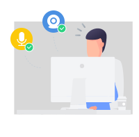
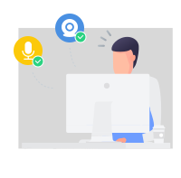
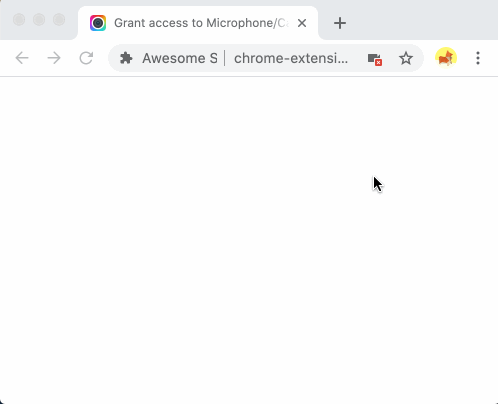

If you don't see the popup window with Allow button in the upper left corner, click in the address bar to Allow as instructed below.
Setup access successfully
You have successfully set up microphone & camera access. You can now close this page and start recording.